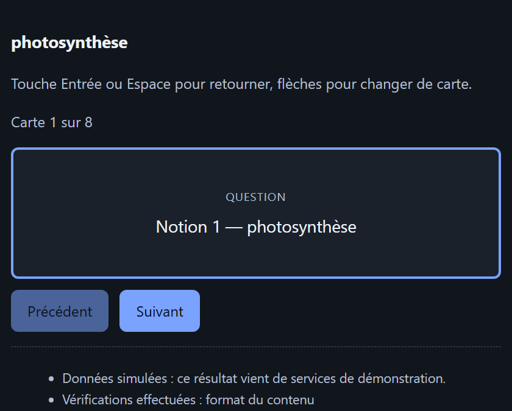
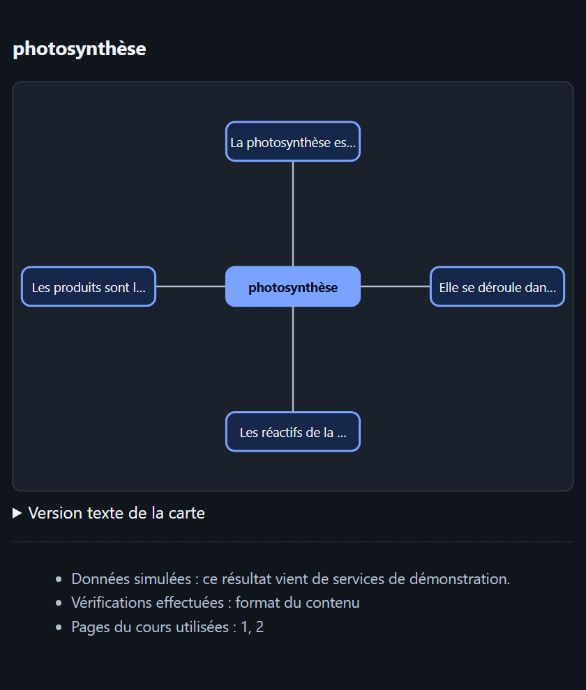
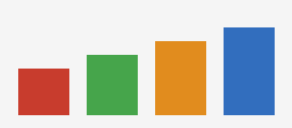
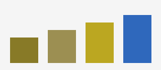
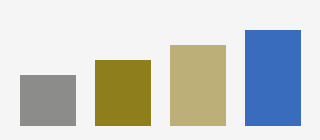
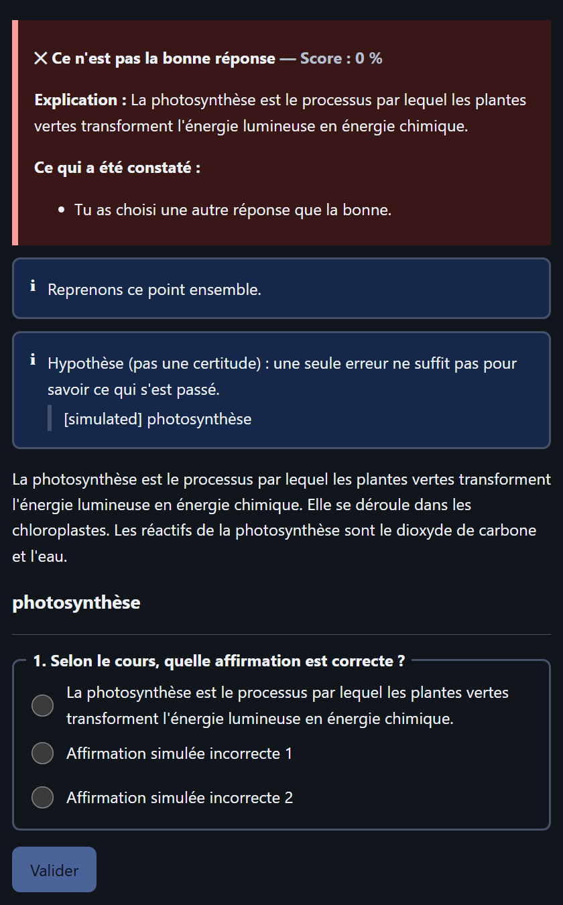
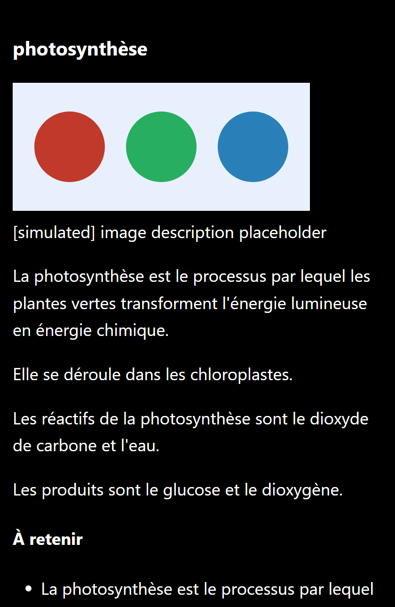

Le module GenAI + RAG de l'équipe est une bibliothèque évaluée avec soin (retrieval hybride, prompts versionnés, citations contrôlées, mode FALC). Le schéma MLOps prévoit une API FastAPI dont l'étape centrale est « génération simulée ou correction ou recommandation RL ». Personne n'avait la charge du code qui relie ces éléments en une session d'apprentissage : comprendre la demande, émettre des questions avec leurs corrigés, corriger, déclencher la remédiation, consulter le RL, gérer les pannes et présenter le résultat de façon accessible.
La couche livrée ici comble ce vide sans dupliquer le RAG, la génération, le RL ni le MLOps : elle appelle le module GenAI directement, expose un routeur FastAPI que l'équipe MLOps peut monter, et fournit une interface React/TypeScript dont chaque écran est décrit par une spécification validée (aucun code venant d'un modèle n'est exécuté).
| Il possède | Il consomme (sans le réimplémenter) | Il ne fait pas |
|---|---|---|
| routage d'intention, graphe LangGraph, vérification, reprises, secours · historique et corrigés côté serveur · spécification d'interface · interface React · adaptation des couleurs, descriptions d'images · contrats et télémétrie | retrieval, quiz, réponses, remédiation (E1/E2) · politique RL (E3) · FastAPI de production, Docker, MLflow, Prometheus, Airflow, CI (E5) | entraîner un modèle · indexer des documents · déployer · créer un second serveur MLflow/Airflow/Prometheus |
Constat établi le 30 octobre 2026 sur la branche genai-rag du dépôt et sur le schéma d'architecture du MLOps.
| Composant | État | Conséquence pour cette couche |
|---|---|---|
| GenAI + RAG (E1/E2) | Bibliothèque + CLI : ingestion PDF/MD, E5 + ChromaDB, recherche hybride BM25, prompts YAML versionnés, quiz/réponse/remédiation, garde-fou de citations, évaluation RAGAS v1→v5. Pas d'API. | appelé en processus ; son code n'est pas modifié |
| MLOps (E5) | Schéma : FastAPI :8000, MLflow, Prometheus/Grafana, Airflow (pipelines RAG/RL simulés), CI. Code non encore publié. | routeur montable + événements de télémétrie ; aucune infrastructure ajoutée |
| RL (E3) | Non livré. | adaptateur HTTP + simulation étiquetée |
| Lacune | Réponse de la couche agentique |
|---|---|
Aucune correction de réponse ; la réponse attendue est passée à la main à remediate() | QCM et vrai/faux corrigés localement par clé de réponse ; réponses libres notées par un LLM (prompt versionné grade@v1) |
QuizItem sans identifiant et avec son corrigé embarqué : l'envoyer au navigateur révèle les réponses | identifiants uniques par requête ; vue « élève » sans corrigé ; corrigés conservés côté serveur et rattachés à l'élève |
| Aucun historique d'élève (« LLM + historique élève » dans le sujet) | historique serveur par élève (scores, erreurs par compétence) alimentant la remédiation et le RL ; le client ne peut pas le fournir |
diagnostic de remédiation présenté comme un fait | affiché comme hypothèse ; formulation distincte après une erreur isolée ou répétée ; l'« erreur observée » reste un bloc séparé |
quiz() et remediate() ne renvoient pas leurs passages ; les source_pages ne sont jamais vérifiées | retrieval indépendant avec la même requête ; contrôle « pages sources ⊆ passages récupérés » ; régénération bornée avec le motif de rejet |
| Client LLM : 8 reprises et délai par défaut du SDK (10 min) : une panne bloque la requête de l'élève | timeout par appel, reprises bornées, mode dégradé, bloc de secours ; délai global du graphe |
| Trois méthodes séparées ; pas de demande en langage naturel ; pas de carte mentale, d'étapes, de comparaison, de notions clés | routeur d'intention FR/EN ; quatre prompts versionnés supplémentaires appelés via Tutor.llm.structured |
| Images extraites mais jamais décrites ; pas d'adaptation des couleurs | descriptions par modèle de vision (optionnel), adaptation daltonisme sans modèle, texte de remplacement explicite si indisponible |
| Pas d'interface ; schéma MLOps sans élève ni enseignant | interface React/TypeScript élève et enseignant |
Principe de séparation. React affiche ; FastAPI valide et authentifie ; LangGraph orchestre les requêtes temps réel (routage conditionnel, boucle de vérification bornée, reprise sur erreur) ; les adaptateurs appellent les services des coéquipiers ; le MLOps observe, versionne et déploie sans orchestrer chaque requête d'élève. Airflow reste réservé aux traitements par lots (ingestion, évaluation, réentraînement) : il n'intervient jamais dans une interaction d'élève, qui doit répondre en quelques secondes et conserver son état de session.
Toute erreur fatale route vers recover (bloc de secours localisable) puis finalize, qui revalide la spécification complète avant envoi. Un nœud n'est un « agent » que s'il décide (intention, vérification, reprise) ; le reste est déterministe.
| Workflow | Déroulement | Garde-fous |
|---|---|---|
A — Expérience adaptativePOST /tutor/experiences | « Génère cinq questions », « flashcards », « carte mentale », « étape par étape », « compare », « montre les notions clés », « un autre exercice » → intention (règles FR/EN, classifieur LLM facultatif pour les cas ambigus) → récupération des passages → génération → vérification → recommandation RL si la demande l'exige → figures → spécification d'interface. | pas d'appel RL pour une simple explication ; aucun passage trouvé → on le dit (aucune génération hors cours) |
B — Réponse et remédiationPOST /tutor/answers | correction (clé de réponse, ou LLM pour une réponse libre) → erreur observée → si faux : passages ciblés, remédiation (Tutor.remediate avec les erreurs précédentes de l'élève) présentée comme hypothèse → exercice → RL. | question à tentative unique (le retour révèle la réponse) ; panne de remédiation → on garde le retour de correction |
C — Rapport enseignantPOST /teacher/reports | période validée → agrégats par notion (jamais de ligne par élève) → synthèse LLM à partir des seuls agrégats → indicateurs, graphique + tableau, difficultés récurrentes. | rôle enseignant et classe autorisée ; période ≤ 366 jours, pas dans le futur ; données simulées étiquetées |
D — Parcours d'apprentissagePOST /tutor/recommendations…/{id}/outcome | caractéristiques calculées côté serveur (scores récents, temps moyen, préférences déclarées) → demande au RL parmi un catalogue d'activités → validation de la réponse → carte de recommandation ; le retour de l'élève est transmis au RL (signal de récompense). | une activité non proposée est rejetée ; aucun entraînement dans le graphe |
ProgressionGET /tutor/progress | indicateurs de l'élève à partir de l'historique serveur. | aucun appel de modèle |
Le modèle ne renvoie jamais de HTML, de JavaScript ni de React. La couche sépare le contenu (produit par le GenAI, typé par format) de la présentation : un planificateur déterministe le traduit en blocs choisis dans une liste fermée. La spécification est validée côté serveur (Pydantic, champs inconnus rejetés, textes bornés, texte brut uniquement), revalidée dans le navigateur (zod), puis rendue par une table unique type → composant. Un bloc inconnu ou mal formé est écarté et signalé ; une spécification illisible devient un message de secours.
| Blocs | Composants et accessibilité |
|---|---|
heading text bullet_list callout | titres hiérarchisés (un seul h1), paragraphes, listes ; les messages d'état ont role="note" / "alert" et une icône et un texte (jamais la couleur seule) |
flashcard_deck | carte = bouton (aria-pressed), Entrée/Espace pour retourner, flèches pour naviguer, annonce vocale de la carte |
quiz quiz_feedback | fieldset/legend, boutons radio étiquetés ou champ texte, retour dans une zone aria-live ; aucun corrigé dans le bloc quiz |
concept_cards steps comparison_table | fiches ; parcours séquentiel (aria-current="step") ; tableau avec caption et th scope |
concept_map | dessin SVG décoratif et liste textuelle des relations ; liste seule si l'affichage épuré est demandé |
progress metric_grid bar_chart recommendation_card | <progress> étiqueté ; graphique = tableau de données ; carte avec retour d'activité |
image fallback | figure avec texte alternatif obligatoire, ou texte de remplacement explicite si aucune description n'existe ; message de secours localisé |


Les adaptations reposent uniquement sur des préférences déclarées par l'utilisateur ; aucun handicap ni besoin n'est déduit du comportement. Les préférences sont mémorisées sur l'appareil, envoyées avec chaque demande et appliquées des deux côtés.
| Préférence déclarée | Effet |
|---|---|
| Explications plus simples | niveau de lecture FALC demandé au module GenAI (styles du module, réutilisés) |
| Textes plus courts | segments plafonnés (400 caractères) dans la demande de génération |
| Affichage épuré | aucune figure ; carte conceptuelle en liste ; pas de graphique décoratif |
| Lecteur d'écran | description longue des figures ; version texte des cartes ouverte |
| Contraste élevé · taille du texte | thème noir/blanc/jaune ; échelle de 100 % à 200 % ; cibles ≥ 44 px ; focus toujours visible |
| Vision des couleurs (protanopie, deutéranopie, tritanopie) | les figures du cours sont recolorées : simulation de Machado et al. (2009) en RVB linéaire, puis décalage de l'information perdue vers des canaux distinguables (« daltonize ») ; les gris restent inchangés (testé) |
Descriptions de figures. L'ingestion du module extrait déjà les images ; la couche les décrit avec un modèle de vision compatible OpenAI (par exemple LLaVA sur Ollama) si un modèle est configuré, avec une description courte et une description détaillée. Sans modèle, la figure s'affiche avec la mention « description indisponible » : aucune légende n'est inventée. Les images ne sont jamais servies par chemin de fichier : le navigateur reçoit un identifiant opaque et les récupère avec son jeton.





| Garantie | Mécanisme | Vérifié par |
|---|---|---|
| Les corrigés ne quittent pas le serveur ; une question corrigée n'est pas rejouable | vue élève sans clé ; corrigés rattachés à l'élève ; question supprimée après correction | test_session_loop, contract.test |
| L'identité et le rôle ne sont pas falsifiables | identité issue du jeton ; champs student_ref / en-tête de rôle ignorés ; corps strict | test_api |
| Authentification de développement jamais présentée comme réelle | refus hors développement ; sans jeton configuré, tout est rejeté ; interface Authenticator remplaçable | test_api, test_adapters |
| Injection par le contenu du cours | passages transmis comme données non fiables ; consignes explicites dans chaque prompt ajouté ; sorties validées par schéma, jamais interprétées comme du HTML | test_tuteur_adapter, render.test |
| Sortie de modèle malformée | schémas stricts ; contrat violé → erreur typée, pas de reprise inutile ; régénération bornée avec motif | test_schemas, test_tuteur_adapter |
| Panne ou lenteur d'un service | timeout, reprises bornées sur erreurs transitoires seulement, réponse « partielle » ou bloc de secours, délai global (504) | test_adapters, test_graph_workflows |
| Aucune affirmation de vérification non exécutée | checks_run liste les contrôles réels ; l'interface les nomme | render.test, test_session_loop |
| Aucune donnée simulée présentée comme réelle | simulated sur chaque réponse issue d'un service simulé ; mocks refusés en production | contract.test, test_adapters |
| Minimisation des données | identifiant pseudonyme ; rapports en agrégats ; télémétrie et logs sans texte d'élève | test_graph_workflows |
| Hypothèse ≠ constat | erreur observée et confusion supposée dans des blocs distincts, formulation selon la répétition | test_session_loop |
| Service | Interface |
|---|---|
| GenAI + RAG (E1/E2) | En processus : Tutor.store.search, Tutor.quiz, Tutor.ask, Tutor.remediate, Tutor.llm.structured. Seul integrations/tuteur_backend.py connaît ces signatures. Commutable vers HTTP (TUTOR_GENAI_BACKEND=http) sans toucher au graphe. |
| RL (E3) | POST /v1/recommend (élève pseudonyme, caractéristiques, activités proposées) → une activité parmi celles proposées ; POST /v1/outcomes pour le signal de récompense. |
| Données d'apprentissage (propriétaire à confirmer) | POST /v1/learning-summaries → agrégats par notion ; jamais de lignes par élève. |
| MLOps (E5) | routeur à monter sous /api/v1 ; service.readiness() pour /ready ; Telemetry(sink) avec les événements tutor.adapter.call, tutor.verification.result, tutor.workflow.completed (workflow, résultat, latence, tentatives, versions, request_id). |
| Équipe | Demande |
|---|---|
| GenAI / RAG | (1) paramètre doc_id pour ask() et quiz() (aujourd'hui toute l'indexation est interrogée) ; (2) renvoyer les passages utilisés par quiz() et remediate() ; (3) timeout configurable dans LLM (délai par défaut du SDK : 10 min, 8 reprises) ; (4) formuler diagnostic comme hypothèse ; (5) reprendre ou non les prompts ajoutés ; (6) mini-jeux : toujours à faire de leur côté. |
| RL | valider le vocabulaire (quiz|exercise|flashcards|explanation|revision|mini_game ; easy|medium|hard) et fournir un catalogue d'activités réel. |
| MLOps | monter le routeur ; exposer /health, /ready, /metrics ; pont MLflow/Prometheus pour la télémétrie ; appeler le vrai tuteur ingest/eval dans Airflow plutôt que des pipelines simulés ; format du manifeste registry/validation/latest.json à définir ; remplacer l'authentification de développement. |
README.md (section ajoutée à la fin, contenu GenAI inchangé) et .gitignore (une ligne : data/images_adapted/). Tout le reste est nouveau : backend/agentic/, frontend/, docs/agentic/. Aucun fichier de src/tuteur, tests, eval ni data n'est touché.| Ce qui a été exécuté | Résultat | Portée |
|---|---|---|
Backend : pytest (hermétique) | 192 réussis | schémas (24), routage (31), adaptateurs et résilience (21), workflows et graphe (38), API (29), module GenAI simulé sur ses vrais schémas (17), inclusion (19), boucle de session (13) |
Backend : tests sur le vrai Tutor et VectorStore | 3 réussis (opt-in) | vrai ingestion, embeddings E5, ChromaDB, recherche hybride, prompts et schémas du module, garde-fou de citations ; seul le LLM est remplacé par un bouchon |
Frontend : vitest | 98 réussis | contrat avec le backend (19) ; rendu des 14 réponses réelles — audit axe-core avec et sans préférences, absence de codes bruts (42) — plus transparence et contenu malformé (13) ; comportement (15) ; application (9) |
| Tests de l'équipe GenAI (module inchangé) | 42 réussis | exécutés dans le même environnement |
ruff · tsc · vite build | sans erreur | bundle de production 343 Ko (104 Ko compressé) |
| Parcours HTTP bout en bout (serveur de développement + proxy Vite) | conforme | 401 sans jeton, quiz sans corrigé, remédiation, question non rejouable (404), progression, rapport refusé à un élève (403), rapport enseignant |
Deux anomalies ont été trouvées par ces tests puis corrigées : une question corrigée pouvait être rejouée après avoir lu la réponse dans le retour, et un code interne (selected_incorrect_option) s'affichait tel quel à l'élève. Une troisième, visuelle (bouton radio écrasé par un libellé long), a été repérée sur capture d'écran.
backend/agentic/src/tutor_agentic/ routing/ intentions : règles FR/EN + classifieur facultatif graph/ nœuds, arêtes, vérification, planificateur d'interface integrations/ contrats, adaptateurs HTTP, adaptateurs du module GenAI, simulations genai_ext/ prompts versionnés : carte mentale, étapes, comparaison, notions, correction, intention inclusion/ adaptation des couleurs (daltonize) schemas/ requêtes, contenus, spécification d'interface (UISpec) service.py history.py store.py auth.py telemetry.py api/ dev_server.py frontend/src/ ui-schema/ renderer/ components/ a11y/ i18n/ api/ pages/ test/ docs/agentic/ INTEGRATION.md · ce rapport
# tests (sans réseau ni clé API) cd backend/agentic && pip install -e ".[dev]" && pytest && ruff check src tests cd frontend && npm install && npm test && npm run build # démonstration locale (services simulés) python -m tutor_agentic.dev_server # puis, dans frontend/ : npm run dev # avec le vrai module GenAI + RAG pip install -e . && tuteur ingest data/raw/photosynthese.md && TUTOR_GENAI_BACKEND=tuteur python -m tutor_agentic.dev_server # vérification sur le vrai module (télécharge le modèle d'embedding) TUTOR_REAL_MODULE=1 pytest tests/test_real_module.py